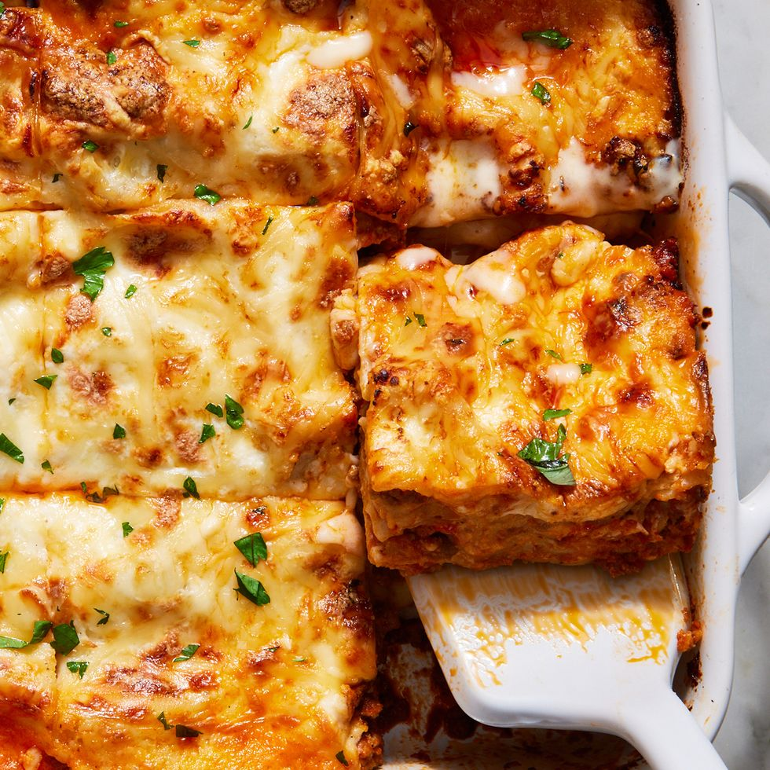

Lasagna

Description
This is an excellent recipe for an easy and delicious homemade lasagna.
It will include making a bolongese and a bechmel sauce from scratch which will be super fun
Ingredients
Bolongese
- 1 tsp. extra-virgin olive oil
- 1 lb. (90% lean) ground beef
- 1 lb. ground pork
- 3 tbsp. tomato paste
- 2 (32-oz.) jars marinara sauce
- 2 tsp. kosher saltr
Bechmel
- 4 c. whole milk
- 1/2 c. (1 stick) unsalted butter
- 1/2 c. all-purpose flour
- 1/4 tsp. ground nutmeg
- 2 tsp. kosher salt
- 1/2 tsp. freshly ground black pepper
Assembly
- 15 no-boil lasagna noodles (about 9 oz.)
- 1 lb. whole-milk mozzarella, shredded
- 3 c. finely grated Parmesan (about 7 oz.)
- Cooking spray
- Chopped fresh parsley, for serving
Steps
- In a large pot over medium-high heat, heat oil. Cook beef and pork, breaking up with a wooden spoon, until no longer pink, about 5 minutes. Drain excess fat.
- Add tomato paste to pot and cook over medium-high heat, stirring, until incorporated, about 1 minute. Add marinara sauce and stir to combine. Bring to a boil, then stir in 1 teaspoon salt. Reduce heat to medium-low and simmer, stirring occasionally, until flavors have melded, about 20 minutes; season with remaining 1 teaspoon salt, if needed.
- In a medium pot over medium heat, heat milk until warm to the touch but not boiling.
- In a large pot over medium-high heat, melt butter. Add flour and cook, whisking frequently, until light tan in color and texture resembles wet sand, about 2 minutes. Whisking constantly, very slowly add milk until combined. Increase heat to high and continue to cook, whisking constantly, until sauce is thickened and smooth, 3 to 5 minutes.
- Pass spoon through edges of pot to collect any butter-flour mixture that wasn’t fully incorporated and mix to combine. Stir in nutmeg; season with salt and pepper.
- Preheat oven to 350°. In a deep 13"-by-9" ceramic, glass, or metal baking dish, spread 1 1/2 cups Bolognese, followed by 3 pasta sheets and 3/4 cup béchamel. Sprinkle with about one-fifth of mozzarella and Parmesan. Repeat to make 5 layers, finishing with cheese.
- Spray a sheet of foil with cooking spray. Cover dish oiled side down.
- Bake lasagna 20 minutes, then increase oven temperature to 400°. Uncover and continue to bake until sides are bubbling and darkened and cheese starts to turn golden brown, 25 to 30 minutes.
- Turn broiler to medium. Broil lasagna, watching closely, until top is toasted, about 1 minute.
- Let cool 15 minutes. Top with parsley and serve.